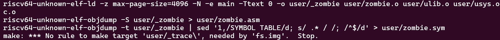
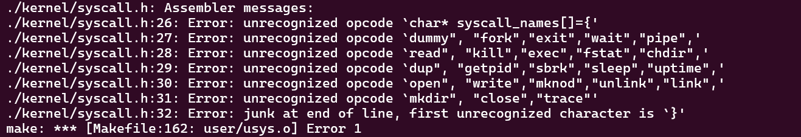

MIT6.s081 2021 Lab System calls
xv6系统调用实现
不同于 Lab1 利用已实现的系统调用来实现一些用户态下的命令行程序，本 Lab 是要在内核层面实现一些系统调用。这其中难免涉及到一些对内核数据结构的操作，以及处理器体系结构（本系列 Lab 基于 RISCV）相关的内容，那么首先有必要梳理一下 xv6 下系统调用的实现过程。
xv6 系统调用的实现：
- 以
trace系统调用为例，用户通过调用user/user.h中的函数trace进行系统调用。 - 通过调用 Perl 脚本
user/usys.pl生成的一系列汇编代码，该汇编代码的作用是设置寄存器的内容并实现用户态到内核态的切换，内核后续针对寄存器中的内容执行相应的系统调用操作。以下是对user/usys.pl代码的逐行解析：
#!/usr/bin/perl -w：这是一个Perl脚本的“shebang”行，指定使用/usr/bin/perl解释器执行此脚本，并开启警告（-w）选项。
print "# generated by usys.pl - do not edit\n";：打印注释说明此文件是由usys.pl脚本自动生成的，不应手动编辑。
print "#include \"kernel/syscall.h\"\n";：输出一条预处理器指令，包含一个名为syscall.h的头文件，该文件可能包含了系统调用相关的常量和宏定义。
sub entry {...}：定义了一个名为entry的子程序（函数），它接受一个参数（系统调用名称）。
my $name = shift;：在entry函数内部，使用shift函数获取传入的第一个参数（系统调用名称），并将其存储在变量$name中。接下来的几行
.global $name：声明一个全局标签（函数名），使得链接器能够找到它。${name}:\n：定义了一个标签，对应于系统调用函数的开始。li a7, SYS_${name}\n：装载（load immediate）指令，将系统调用号（通过宏SYS_${name}得到）放入寄存器a7中。在RISC-V架构中，a7寄存器通常用于存放系统调用号。ecall：执行系统调用指令，这会触发处理器进入内核模式并执行相应的内核服务。ret：返回指令，从系统调用中返回到用户程序。最后，脚本通过多次调用
entry函数（传入不同的系统调用名称，如fork,exit,wait等），为每一个列出的系统调用生成对应的汇编代码存根。
- 内核在执行系统调用时，只是调用
kernel/syscall.c中的syscall函数，该函数读取寄存器 a7 的值，将其作为系统调用号，执行实际的系统调用函数（如sys_trace），并将函数返回值放入寄存器 a0 中，调用结束。
System call tracing
思路
理解了上述的系统调用过程，就可以开始着手完成系统调用的添加了。
由题干可知，用户态系统调用函数 trace 的参数为一个整型 mask，该 mask 用来表示哪些系统调用需要被追踪，如果 mask 的第 i 位为 1，则系统调用号 i 对应的系统调用将被追踪。
首先，在 user/user.h、user/usys.pl 和 kernel/syscall.h 中添加 trace 的声明。
接下来，在 kernel/sysproc.c 中实现系统调用函数 sys_trace，该函数获取用户态传递的 trace 函数的参数 mask，并存入当前进程的 PCB（进程控制块，xv6 中为 kernel/proc.h 中的 struct proc 结构体）中。获取参数的操作，可以查看如下 xv6 文档的描述，并参考 kernel/sysproc.c 中其它系统调用函数的实现。由于参数类型为整型且数量只有一个（存放在 a0 寄存器中），因此调用 argint(0, &(myproc()->mask))。另外需要注意的是，struct proc 的初始定义中并没有 mask 段的内容，需要自行添加。
Because user code calls system call wrapper functions, the arguments are initially where the RISC-V C calling convention places them: in registers. The kernel trap code saves user registers to the current process’s trap frame, where kernel code can find them. The kernel functions argint, argaddr, and argfd retrieve the n ’th system call argument from the trap frame as an integer, pointer, or a file descriptor. They all call argraw to retrieve the appropriate saved user register (kernel/syscall.c:35).
然后，修改 kernel/proc.c 中 fork 函数的定义，为 mask 字段添加拷贝操作，将父进程的 mask 字段传递给子进程，以此实现对子进程的追踪。
1 | np->mask = p->mask; |
最后，修改 kernel/syscall.c 中的 syscall 函数，判断当前的系统调用号是否位于被追踪的范围内，如果是，则按照要求格式将要追踪的信息打印出来：其中进程号为 myproc()->pid；函数调用名可手动创建一个系统调用名称表，通过将系统调用号作为下标来获取；函数返回值位于寄存器 a0 中，可通过 myproc()->trapframe->a0 来获取。
问题
最后再记录一下本 Lab 遇到的一些问题：
make失败

被这个错误困扰了挺久，甚至还为此使用 git reset 回退了版本，最后发现是在 $U/_trace\ 的末尾多了一个空格。。。
系统调用名称表添加出错

原因是我将系统调用名称表添加在了 kernel/syscall.h 中，但该头文件后续是会被 user/usys.pl 用于生成汇编的，因此不能包含 C 语言语句，最后是选择直接添加在了 kernel/syscall.c 中。
代码
由于本 Lab 主要是在原先的内核代码上进行修改，涉及的文件较多，因此代码部分以 git diff 的形式展现。
1 | diff --git a/Makefile b/Makefile |
Sysinfo
思路
在完整添加了一个新的系统调用，熟悉了整体流程之后，本题相对就比较轻松了。声明添加的操作就跳过不谈了，这里主要关注 sys_sysinfo 的实现：即获取 freemem 和 nproc 的信息并将其填充到参数 sysinfo 指针对应的地址处。
这个大的目标可以拆分为 3 个小目标：
- 如何获取
freemem的信息？ - 如何获取
nproc的信息？ - 如何将数据填充入指定的地址中（用户空间）？
获取 freemem 的信息
仔细阅读 kernel/kalloc.c 的代码，可以发现一些关键信息：
struct run：用来内存分配单元的数据结构，本身的地址即为所指向的内存空间的起始地址，包含一个next指针，用于实现链表。kmem.freelist：空闲链表，存储着一系列指向空闲空间的指针。PGSIZE：内存分配页的大小，即每个struct run *所指向的内存空间的大小。
了解了上述信息后，计算空闲空间的大小就很简单了，只需要计算空闲链表的长度 n，空闲内存的空间大小即为 n * PGSIZE。
1 | uint64 freemem_bytes(void) { |
获取 nproc 的信息
与上面一样，阅读 kernel/proc.c 的代码，可知：
struct proc proc[NPROC]：进程数组，存储着所有进程的struct proc.UNUSED：struct proc中enum procstate的类型之一，代表本struct proc未被使用。
那么要得到当前系统中进程的数量，只需要遍历整个 proc，计算未处于 UNUSED 状态的进程数量即可。
1 | uint64 proc_num(void) { |
将数据填充入指定的地址中
得到 freemem 和 nproc 之后，就需要将数据写入 sysinfo 的参数 struct sysinfo * 指向的内存区域，获取参数的方法和 tracing 类似，不过由于参数是指针类型，因此采用 argaddr。最后，仿照 kernel/file.c 中的操作，使用 copyout 将内核区域的数据写入用户空间中。
1 | uint64 sys_sysinfo(void) { |
代码
1 | diff --git a/Makefile b/Makefile |
 微信
微信 支付宝
支付宝